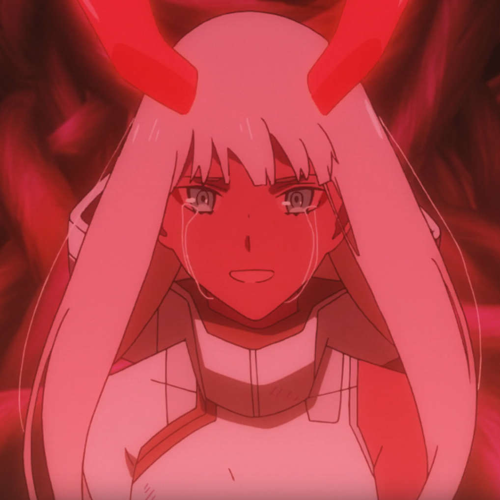

КОД02 КОД02
Код: 002 (Ноль Два)
Персонаж из аниме Милый во Франксе или же Darling in the FranXX.
Эта девочка является пилотом элитного подразделения специальных сил, принадлежащая специальной охранной единице непосредственно под командованием APE.
Она не является человеком из-за чего многие опасаются её, но при этом она является паразитом.
Франксы – большие боевые роботы женского облика, созданные для борьбы с нападающими на человечество ревозаврами. Франксы управляются строго двумя пилотами-паразитами, пестиком – инженером женского пола, и тычинкой – рулевым мужского пола.
02 может как пилотировать с пилотом, так и вести франкс в бой в одиночку, что расходует у неё большие силы, которые она восполняет убивая своих тычинок. Обычно её партнёры не выдерживали больше трёх полётов с ней.
Это правило нарушил только один парень – Хиро.
СТРЕЛИЦИЯ
Стрелиция
Специальный франкс, пестиком которого может быть только Ноль Два. Единственный кто может выдержать более 3 поездок в Стрелиции, это Хиро, так как он вылизал кровь 002 в детстве, когда та содрала коленки после падения
А вот и тот самый Хиро. Отношения Ноль Два с ним постоянно разиваются, потому что они единственные друг у друга могут быть партнёрами во франксе.В последствии раскрывается то, что в детстве они были знакомы и пытались сбежать из лагеря. Но их попытка побега провалилась и им обоим стёрли память.
В детстве она выглядела куда более похожей на монстра, с красной кожей, длинными ногтями и зубами, а кровь ее была синего цвета. Рога были намного больше по сравнению с головой. Код 002 оказывается клоном принцессы рёвозавров, созданная доктором Франксом.

